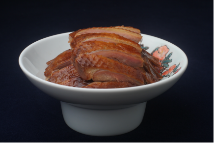
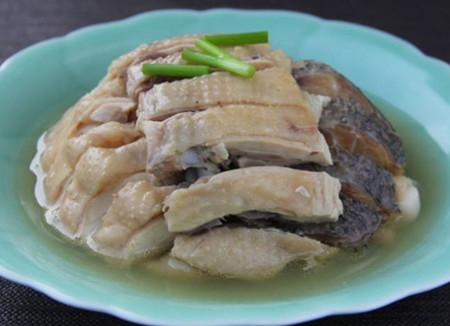
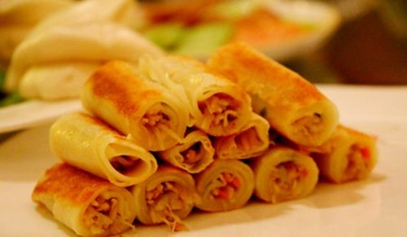
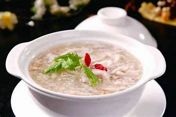
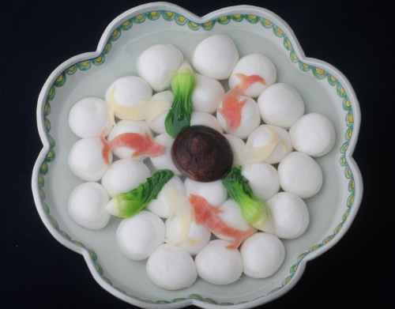
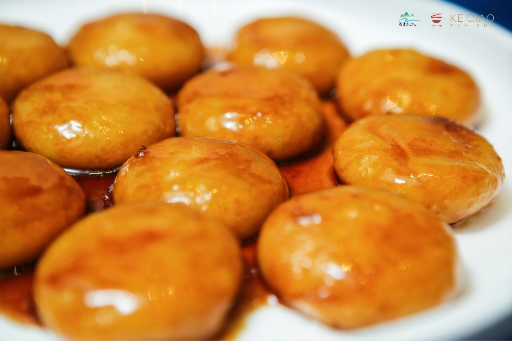

首页
简介
景点
美食
注册
登录
个人简介

酱鸭
“越地鸭肴香”。酱鸭为众多鸭肴中冬令佳品，大街小巷，户户屋前家家廊下，酱鸭挂晒满竿，煦日霜气之下，香气四溢，成了越中一番风情景趣。1956年3月在浙江省饮食展览会上被评为绍兴名菜。

白鲞扣鸡
“白鲞扣鸡”是绍兴民间的传统佳肴。咸鲜互补，两味渗合，鸡有鲞香，鲞有鸡鲜，咸鲜入味，香醇清口，富有回味，不愧为肴中之珍品，绍兴“咸鲜合一”风味的典型代表。

银丝响铃
豆腐皮，薄如蝉衣，且色泽黄亮，包卷以萝卜丝鱼茸馅而成响铃。经油炸而食，香松鲜嫩，清脆如铃，别具一格，入口酥脆，满嘴留香，回味无穷，是当地人必不可少的美食之一。

宋嫂鱼羹
宋嫂鱼羹是传自南宋的一款名菜，至今已有800多年历史。 它是将鳜鱼或鲈鱼蒸熟后，取肉拨碎，添加烩制的羹菜即成，吃起来鱼肉非常鲜嫩。

清汤鱼圆
清汤鱼圆不仅美味，更是绍兴人心目中不离不弃的吉祥大菜，寓意着团圆、圆满、吉祥，不论“红白”喜事的宴客，还是逢年过节的团圆餐，都离不开鱼圆这道大菜。

糖煎饼
加入适量的水和红糖，将其熬制黏稠，将煎好的糯米饼翻炒均匀即可，最后可以撒上白熟芝麻；比起传统的煎饼，糖油煎饼加入了甜的味觉，是口味更加适宜年轻人。
1
2
下一页